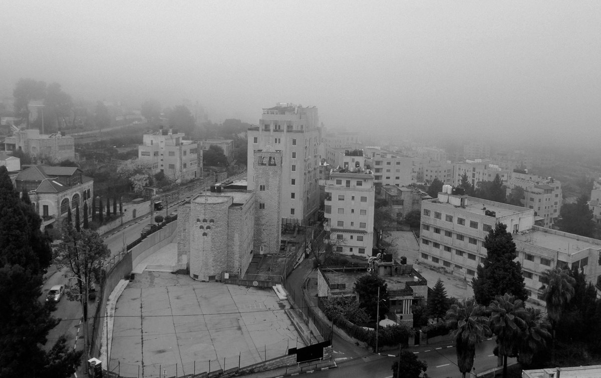

Lefteris Krysalis
/
Selected Works
/ publications
Publications
2026
What Is Made Aphonic in the Borderscape of Western Thrace? (upcoming)
Het Nieuwe Instituut
2025
Listening to Aphonic Borderscapes in Western Thrace
Witnessing journal
